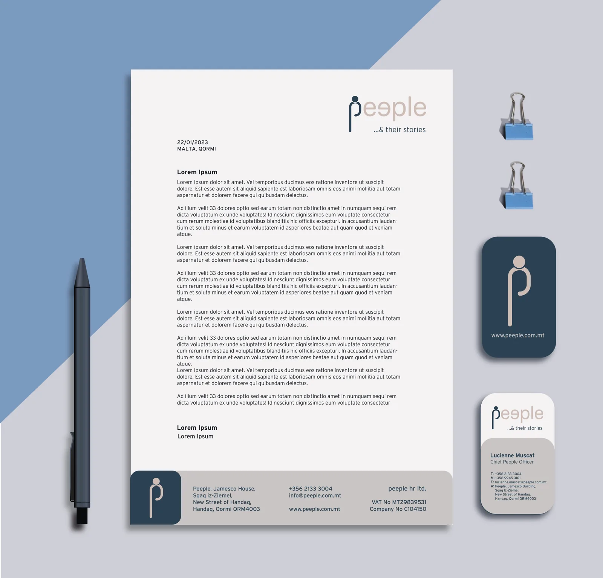
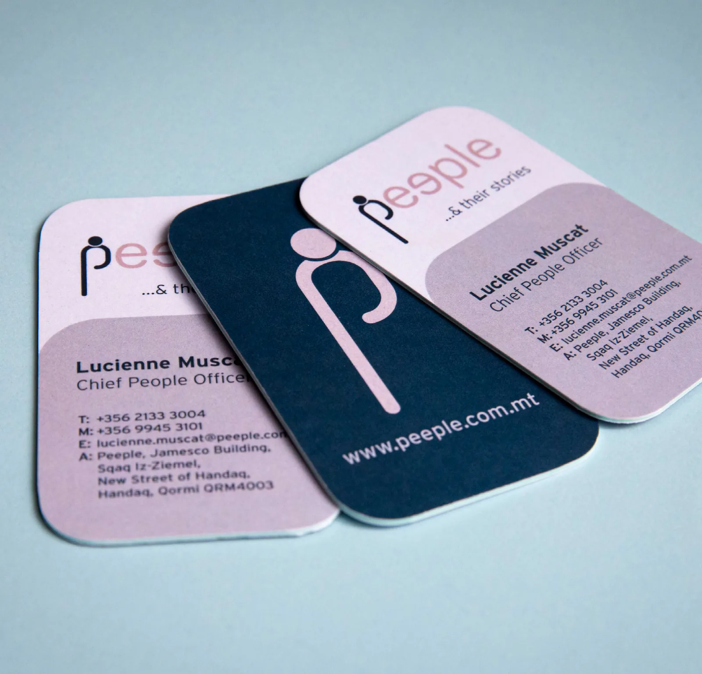
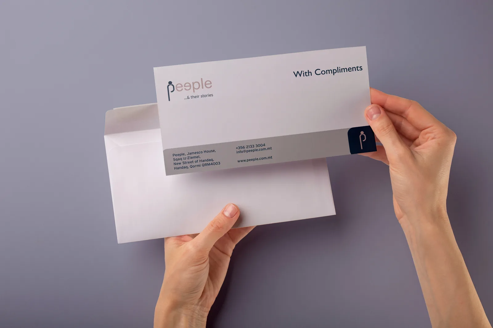
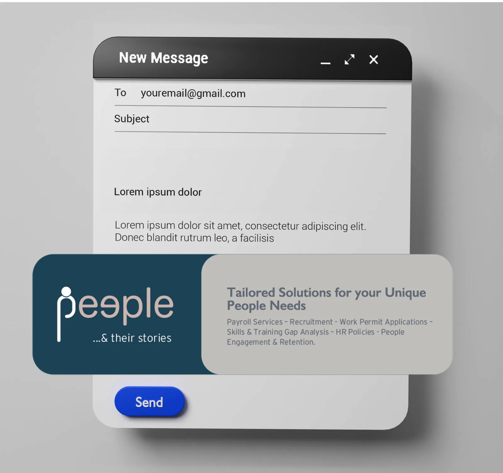

שלושה מותגים, כל מדיה: עיצוב קמפיינים בסוכנות במלטה
ב־Communiqué ניהלתי את עיצוב הרשתות, האתרים והקמפיינים בגוגל ובמטא של 30 מותגים, עם שלושה מתמחים תחתיי, משלט בכביש ועד פוסט בפיד. שלושה מותגים מראים איך כל רעיון עובר בחוצות, בדפוס, ברשתות ובאתר.
בריף, קונספט וכל פורמט
קמפיין ב-Communiqué מתחיל בבריף של הלקוח ומסתיים בסט חלקים לכל מדיה שהלקוח קונה: שלטים ואוטובוסים, עלונים ופרוספקטים, פוסטים בפייסבוק ובאינסטגרם, ובאנרים לאתר וסרטון קצר. התפקיד שלי היה להפוך את הקונספט למערכת שמחזיקה מעמד בכל מדיה, ולתת בריף ולבדוק את העבודה של המתמחים שהפיקו את ההתאמות.
קמפיין הוא לא תמונה מרכזית אחת. זה אותו רעיון ששורד שלט של 12 מטרים וריבוע של 1,080 פיקסלים.
Pakkett French Fries: "Crunch"
השקה של חטיף. הקראנץ' הוא המוצר, ולכן הקראנץ' הוא הקמפיין: צהוב ואדום חזקים, הצ'יפס שובר את המסגרת, טקסט במלטזית על שלט בכביש ומשפטים קצרים בנייד. חוצות, רשתות ופריסת וידאו.


עברו עם העכבר או הקישו על פריט כדי לראות מה הוא. הקישו להגדלה.
Potato Straws: אותו עולם, טעם אחר
הקו של Mr. Riley שבא אחרי Crunch: Potato Straws, בירוק ובכחול. אותה רוח ואותה אנרגיה, עם אריזה סופית לשמנת ובצל ולגבינה ושמנת, והבטחה חדשה: «Upgrade your snack game». שלטי כביש, תחנות אוטובוס, פוסטים וסטוריז.


עברו עם העכבר או הקישו על פריט כדי לראות מה הוא. הקישו להגדלה.
peeple: מותג גיוס מאפס
זהות והשקה של peeple, סוכנות גיוס: לוגו, brandbook (טיפוגרפיה, צבע, בניית הלוגו), פוסטרים A1, פרוספקטים ומערכת רשתות סביב הרעיון "Borderless talent / Matching talent".
ספר המותג
מדריך המותג של peeple, בכריכה קשה: בניית הלוגו, צבעים ושילוביהם המותרים, טיפוגרפיה, ניירת ויישומים.
ניירת וכרטיסים
כרטיס הביקור, נייר המכתבים, כרטיס הברכה וחתימת המייל, באותה מערכת.




עברו עם העכבר או הקישו על פריט כדי לראות מה הוא. הקישו להגדלה.
כרזות ורשתות


תוכן שוטף וקולה של הסוכנות
מעבר להשקות, התוכן ששומר על מותג חי. עבור NSC עיצבתי את המצגות והפכתי אותן לתכנים לרשתות: שקופיות, אינפוגרפיקות לפייסבוק ופוסטים עם נתונים, לצד סדרת ההמלצות «Feedback Friday» והניירת. עיצבתי גם את חומרי הדפוס והגיוס של Communiqué עצמה.


עברו עם העכבר או הקישו על פריט כדי לראות מה הוא. הקישו להגדלה.
מה לקחתי איתי
שם עברתי מעיצוב מוצר לשיווק: למדתי לעצב לפי תוכנית מדיה, לכתוב בריף שמתמחה יכול לבצע ולשמור על רעיון אחד עקבי משלט הכביש ועד הפוסט הממומן. זה הבסיס לקמפיינים שאני מנהלת היום עם מדידה.